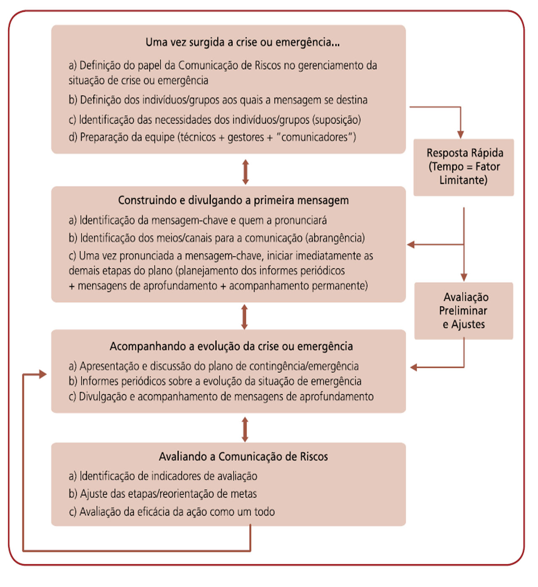
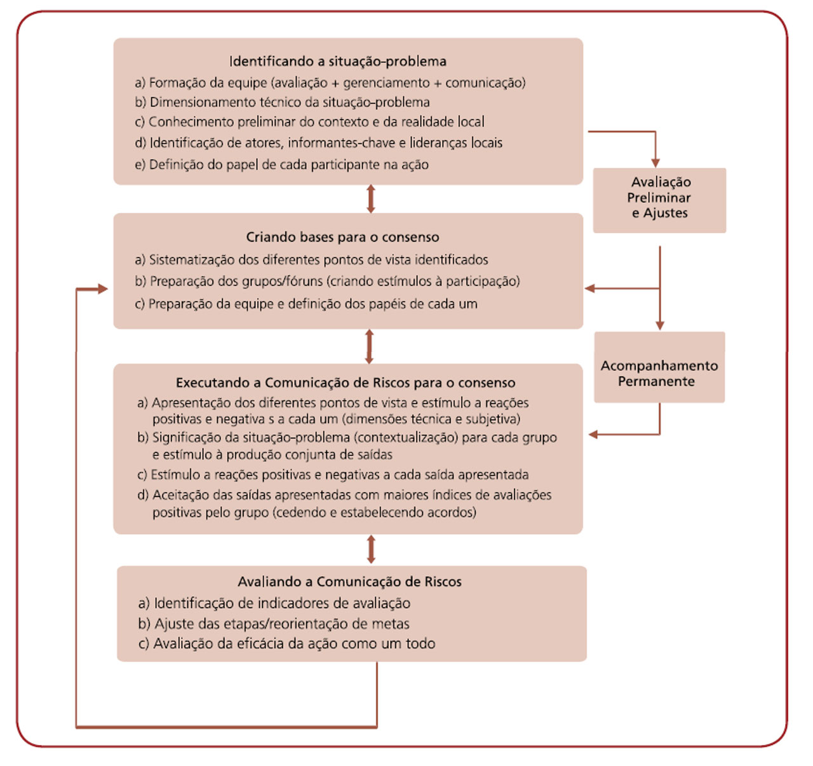
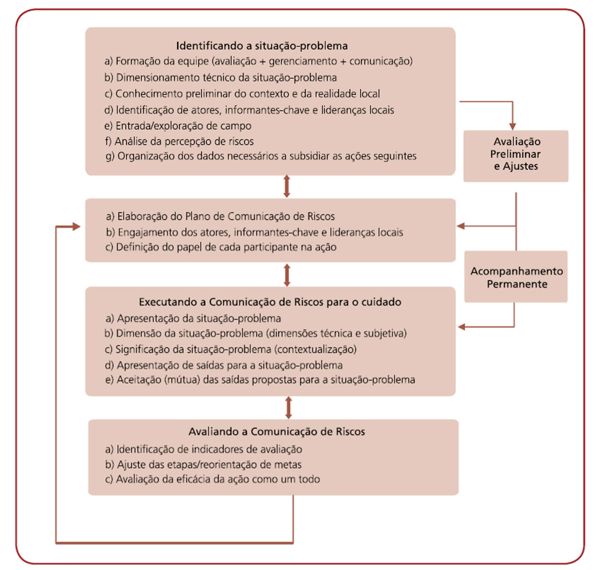

MÓDULO 3 | AULA 6 Comunicação de risco à saúde
Os 3 tipos principais de comunicação de riscos (os “3 Cs”)
Como um processo dialógico voltado à construção de sentidos e respostas frente a situações de risco, é possível considerar que são bastante diversas e heterogêneas as aplicações da comunicação de riscos. Mas, de uma forma geral, é possível identificar três principais aplicações da comunicação de riscos (também conhecidas como os “3 Cs” da comunicação de riscos): a comunicação de riscos para a crise, para o consenso e para o cuidado.
Comunicação de riscos para a crise
A comunicação de riscos para a crise é aquela voltada ao enfrentamento de problemas ou ameaças imediatas. Geralmente, este tipo de comunicação está associado a emergências, catástrofes, grandes acidentes ou desastres, onde a necessidade de resposta ao risco é imediata, sob pena de se colocar a vida ou a segurança dos grupos envolvidos em perigo.
Em um contexto de crise, o risco de se causar pânico com a informação é menor que o estrago causado pela não-informação. Por isso, a comunicação de risco para a crise é, frequentemente, mais sucinta, objetiva, e fortemente centrada no teor das mensagens e no tempo necessário de resposta, por parte da audiência a que se destina. Em alguns casos, e contrariando os princípios anteriormente apresentados, ações comunicativas em situações de crise podem ser mais horizontalizadas e com predomínio de uma unidirecionalidade, aproximando-se daquilo que se entende como transmissão de informações - embora tais momentos de perda do caráter dialógico-participativo devam ser previstos, obrigatoriamente, dentro de planejamento mais abrangente, e sempre considerando, como ponto de partida, os conhecimentos e a literacia dos distintos indivíduos e grupos da população envolvidos com a situação de riscos.
De uma forma geral, e por conta da urgência na resposta necessária, nas estratégias de comunicação de riscos para a crise não há a obrigatoriedade de se desenvolver estudos e pesquisas visando subsidiar, de forma mais completa, as ações em torno das quais os riscos serão analisados e gerenciados. O imediatismo da resposta demanda que a mensagem seja a mais objetiva possível, que alcance a todos a que se destina, no menor prazo possível, e que não deem margem a interpretações distintas daquelas orientadas a resguardar a vida e a segurança dos envolvidos com a crise.
As principais características associadas a uma estratégia de comunicação de riscos para a crise são:
- Uso de mensagens curtas e muito claras.
- Mensagens são proferidas por fontes reconhecidas.
- Escolha dos meios de maior alcance para trabalhar as mensagens-chave.
- Apresentação de instruções claras e possíveis de serem seguidas.
- As informações trabalhadas numa situação de crise não podem ser contraditórias nem truncadas, sob pena de agravar a situação.
- Uma vez colocada a mensagem para a crise, a população deve ser informada periodicamente sobre a alteração do status da situação.
Quando é dada uma situação de crise ou emergência, imediatamente se questiona quem é a pessoa mais indicada para pronunciar um comunicado de alerta ou apresentar instruções para a resposta imediata dos indivíduos ou grupos envolvidos. Embora se saiba que cada órgão ou instituição tem (ou pelo menos deveria ter...) um protocolo para ser seguido nessas situações (e nele a indicação clara de quem é responsável pela comunicação em cada momento da crise), é possível definir, de uma forma geral, quem deve ser responsável pela comunicação de riscos em cada momento de uma situação de crise:
A primeira mensagem ou mensagem-chave deve ser pronunciada pela maior autoridade relacionada ao objeto da crise. No caso de um surto, o Ministro da Saúde. No caso de um problema ambiental, com imediata consequência à saúde, o Ministro do Meio Ambiente e/ou o Ministro da Saúde. Na ausência desses, deve ser identificada a maior autoridade em questão ou a pessoa que goze de maior credibilidade junto ao grupo envolvido com a situação de crise.
Uma vez pronunciada a primeira mensagem ou a mensagem-chave, deve-se apresentar o plano de emergência, cujo objetivo é o contingenciamento da situação. Nesse caso, a comunicação deve ser realizada por profissionais da área técnica associada ao objeto da crise, que devem estar amplamente capacitados a responder a qualquer dúvida a respeito do que está se propondo.
Uma vez implementado o plano de emergência, a população precisa ser constantemente atualizada sobre a evolução do problema ou status da crise. Nesse caso, a comunicação pode ser executada tanto por profissionais da área técnica quanto por profissionais de relações públicas, desde que eles estejam amplamente informados sobre o problema e possam responder a questões que surjam no momento da comunicação.
A Figura 3 apresenta um algoritmo para a construção de uma estratégia de comunicação de riscos para a crise.
Como recurso de aprendizagem principal, as/os alunas/os deverão ler o texto ESTUDO DE CASO “RESPOSTA NACIONAL À SITUAÇÃO DOS YANOMAMIS”, que apresenta um exemplo hipotético de aplicação da comunicação de riscos em situações de crise.
A figura a seguir apresenta, de forma esquemática, um algoritmo para a construção de uma estratégia de Comunicação de Riscos em situações de crise ou emergência. O diagrama organiza o processo em etapas sequenciais e interligadas, desde a definição inicial do papel da comunicação e dos públicos envolvidos, passando pela elaboração e divulgação das mensagens, até o acompanhamento da crise e a avaliação da eficácia das ações comunicacionais. O modelo destaca a importância da resposta rápida, dos ajustes contínuos e da avaliação permanente, evidenciando a comunicação como um processo dinâmico e estratégico no gerenciamento de crises.

Comunicação de risco para o consenso
Uma segunda aplicação da comunicação de riscos é para a resolução de conflitos entre os diversos atores/grupos envolvidos com o objeto do risco. Este tipo de comunicação de risco também se presta a aproximar atores/grupos em torno de um plano de ação de manejo de riscos, ao qual estes estejam envolvidos.
São exemplos da comunicação de riscos para o consenso:
- Consultas públicas sobre implantação de aterros sanitários e outros projetos ambientais de larga escala.
- Reuniões para elaboração de TACs (Termos de Ajustamento de Condutas) voltados ao gerenciamento de problemas e/ou impactos ambientais causados por grandes empreendimentos tecnológicos.
- Reuniões para a descontinuação de atividades de pesca junto a colônias de pescadores localizadas em áreas contaminadas, entre outros exemplos.
A comunicação de riscos para o consenso é, talvez, a menos utilizada entre os “3 Cs”, mas representa um importante instrumento de gerenciamento de riscos aplicado a processos decisórios envolvendo múltiplos tomadores de decisão. Algumas diretrizes devem ser seguidas para a garantia do sucesso de uma estratégia de comunicação de risco para o consenso:
- Reunir o maior número possível de informações confiáveis sobre o risco ou situação-problema.
- Incluir o maior número possível de tomadores de decisão na ação.
- Atuar junto a órgãos e instituições envolvidas com o problema, garantindo seu engajamento em torno do processo decisório.
- Avaliar permanentemente os indicadores de confiança e credibilidade.
- Manter abertos os canais de diálogo durante todo o processo, incluindo um período determinado pós-implementação do consenso.
A Figura 4 apresenta um algoritmo para a construção de uma estratégia de comunicação de riscos para o consenso. O esquema organiza, de forma cíclica e processual, as etapas necessárias para identificar o problema, mobilizar os participantes, promover o diálogo sobre riscos e avaliar continuamente os resultados. O objetivo é apoiar processos decisórios compartilhados, especialmente em contextos complexos, nos quais há conflitos de interesse, múltiplos tomadores de decisão e necessidade de acordos coletivos para o manejo dos riscos.

Comunicação de riscos para o cuidado
A comunicação de riscos para o cuidado é aquela que se baseia em resultados de análises, estudos e pesquisas que tenham por fim a determinação das implicações dos riscos para a saúde e o ambiente. É uma comunicação voltada tanto para a promoção da saúde, quanto às ações de vigilância e atenção à saúde.
Na comunicação de riscos para o cuidado, observa-se a impossibilidade de dissociar pesquisa e ação. A comunicação, aqui, é trabalhada como ferramenta fundamental para o enfrentamento dos problemas levantados, na medida em que os mesmos são identificados, seja por projetos de pesquisa ou por iniciativas de avaliação de riscos. Deve, portanto, estar associada ao conhecimento das formas através das quais as populações respondem frente a uma situação de risco ou ameaça iminente. Por essa razão, na maioria dos casos, torna-se impossível dissociar esse tipo de comunicação a estudos de percepção de riscos.
A comunicação de risco para o cuidado deve ser multidimensional e, geralmente, ocorre em mais de uma etapa. As etapas mais comumente aplicadas são:
Grande parte das iniciativas de comunicação de risco para o cuidado são fundamentadas por estudos culturais ou de percepção de riscos (consultar leituras recomendadas). Esses estudos têm por objetivo subsidiar as estratégias comunicativas com informações específicas sobre o contexto e a realidade dos grupos/indivíduos envolvidos com a situação-problema, informações essas não possíveis de serem obtidas em bases secundárias. Além da contextualização da situação-problema, os estudos culturais e de percepção de riscos também servem de base para o processo de construção de significados, uma vez que se configuram como espaços privilegiados de troca de informações subjetivas junto aos indivíduos e grupos aos quais a ação comunicativa ou de cuidado se destinam.
Servem como estratégia de sensibilização sobre o objeto da comunicação. São mensagens curtas, objetivas, com a principal finalidade de demarcar o objeto e trazer à tona uma situação-problema que será abordada na ação como um todo. São colocadas no início da ação comunicativa, frequentemente após (ou nos momentos finais) a realização de um estudo cultural ou de percepção de riscos.
Uma vez colocada a estratégia de sensibilização, parte-se para a elaboração de um conjunto de mensagens que vão acompanhar a ação de saúde que se pretende (o cuidado propriamente dito). Essas mensagens têm como objetivo principal aprofundar o conhecimento sobre a situação-problema e auxiliar os atores envolvidos no processo de construção de sentidos.
A Figura 5, apresenta um algoritmo para a construção de estratégias de comunicação de riscos para o cuidado. O diagrama evidencia que esse tipo de comunicação é um processo contínuo, participativo e multidimensional, que integra análise da situação-problema, planejamento, execução, avaliação e ajustes permanentes. O objetivo central é apoiar ações de promoção, vigilância e atenção à saúde, considerando tanto os dados técnicos quanto a percepção de riscos dos diferentes atores envolvidos, fortalecendo a tomada de decisão e o cuidado em contextos reais.

A comunicação de risco para o cuidado, por sua natureza de construção de conhecimentos prévios, como estratégia para a antecipação aos riscos, se baseia em algumas diretrizes gerais, tais como:
- Foco em grupos populacionais específicos – a comunicação é específica; portanto, a Comunicação de Riscos para o Cuidado tem por princípio identificar grupos populacionais específicos entre os quais a ação comunicativa será desenvolvida.
- Avaliação permanente – toda mensagem elaborada precisa ser testada, e sua contribuição para a ação de saúde como um todo deve ser avaliada permanentemente.
- Readequação de acordo com a evolução do plano – concomitante e baseado nas estratégias de avaliação permanente, o plano precisa ser readequado constantemente, incluindo pequenos ou médios ajustes necessários. Ajustes estruturais ou mais significativos precisam ser avaliados no âmbito do plano como um todo, podendo ser necessária a elaboração de uma nova ação (dependendo do tamanho do ajuste).
Por fim, cabe lembrar que a comunicação de risco para o cuidado deve ser considerada uma ação transversal a qualquer projeto que vise o gerenciamento ou a avaliação de riscos, ou seja, se inicia com os contatos iniciais entre os diferentes atores em torno de um objeto em comum (no caso, a situação-problema ou risco em questão). Assim, é incorreto achar que a comunicação de risco para o cuidado deva ser o produto final da ação, ou se configura como um repasse dos resultados dos estudos e análise à audiência; ela perpassa toda a ação de controle e manejo de riscos e qualquer descuido ao longo de cada uma das etapas da ação pode comprometer o alcance de seus resultados.